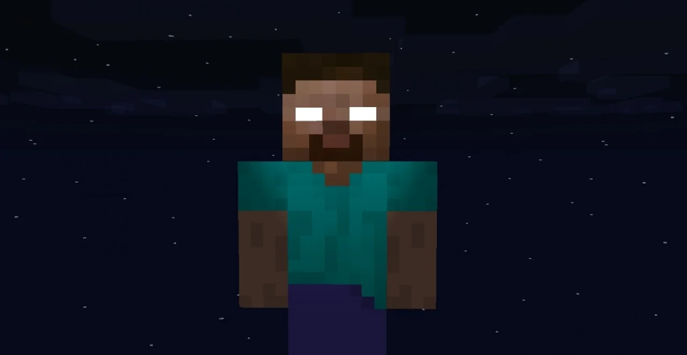
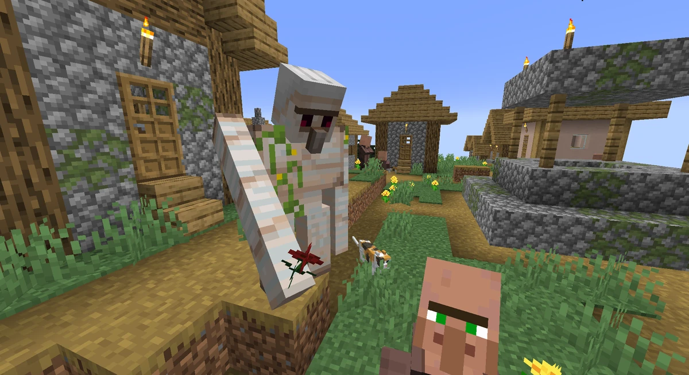
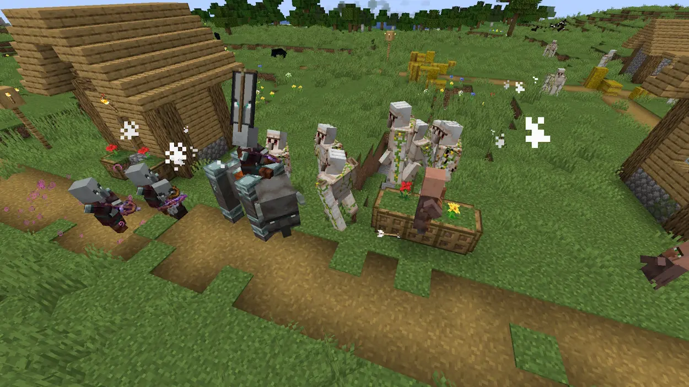

Relatos de avistamentos do Herobrine dispararam em fóruns e redes sociais nas últimas semanas.Aldeões afirmam ter visto a lendária figura de olhos brancos observando-os através da névoa em biomas densos.

Figura 1: Herobrine volta a aparecer nas redondezas
Árvores totalmente despidas de sua folhagem foram encontradas por exploradores
Clique aqui para ver os dados da pesquisa
40% menos: Pessoas nas florestas grasas as aparições de Herobrine
Golem de ferro da vila norduwish desaparece
Publicado em:
Moradores acordaram em pânico com o sumiço repentino do protetor de metal. O Golem de ferro de Norduwish sumiu durante a noite, deixando apenas três flores de papoula no chão.

Figura 2: Golem de ferro de Norduwish desaparece.
Aldeões temem ataques noturnos de zumbis e saqueadores sem a segurança do gigante.
Clique aqui para ver os dados da pesquisa
82% de baixa: Redução drástica na taxa de sobrevivência de aldeões sem o Golem de ferro.
Ataques em aldeias de Illagers estão se tornando mais frequentes
Publicado em:
Pillagers, Vindicators e Evokers intensificaram suas investidas contra vilas da região nas últimas 48 horas. Sem a proteção do Golem de ferro desaparecido, Norduwish tornou-se o alvo principal dessa onda de saques sem precedentes.

Figura 3: Illagers atacando uma aldeia.
Novas torres de vigia Illager foram avistadas surgindo perigosamente perto das fronteiras.
Clique aqui para ver os dados da pesquisa
Aumento de 400%: Crescimento no número de invasões semanais registradas na região.